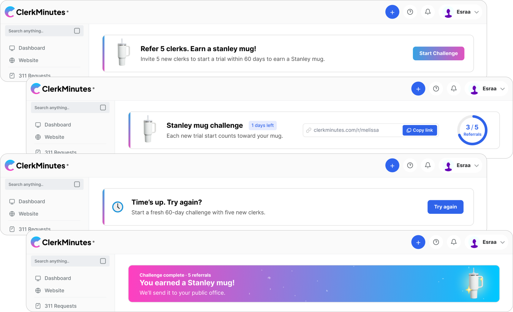
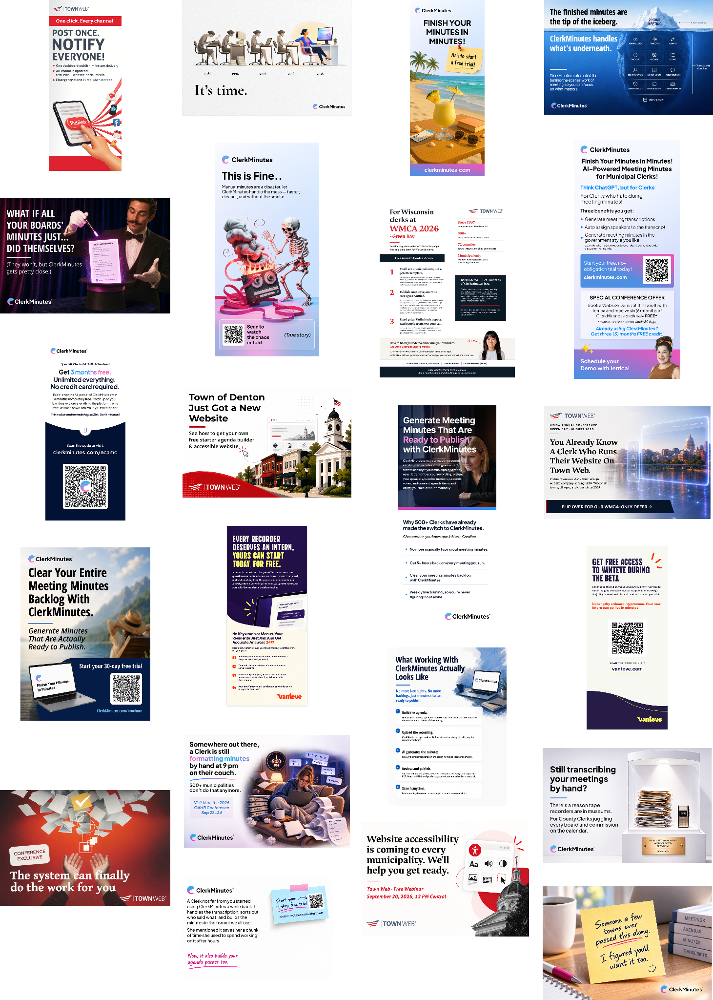
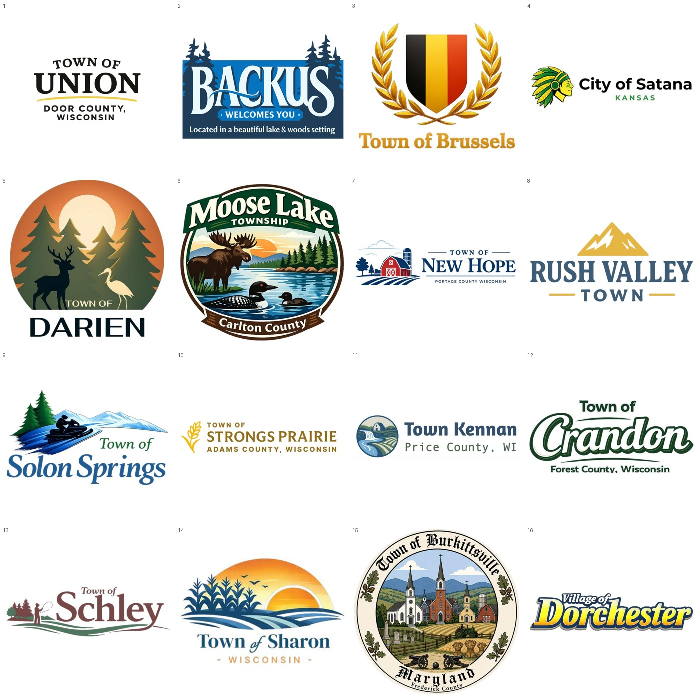

Product UX
Referral flows, interface states and internal product concepts for municipal software.
I turn messy requirements into clear, accessible websites, then stay close enough to implementation to make sure the idea survives the build.
Custom municipal websites, reusable systems, B2B work and product UX. I have owned the design across projects from discovery and information architecture through responsive UI, client review, implementation support and launch.
My work regularly crosses the line between Figma and implementation: variables, CSS, staging, browser QA, responsive behavior, troubleshooting and developer support.

Referral flows, interface states and internal product concepts for municipal software.

Continuous campaign work across Town Web, ClerkMinutes and Vanteve, from landing pages to print.

Dozens of municipal identities, including paid custom logo engagements.
I’m Esraa, a web designer based in Egypt with 5+ years of professional experience. I’ve designed 20+ client websites across municipal, service-business and B2B work, often as the sole designer from early requirements through responsive UI and implementation support.
Web is my core lane. I also contribute to product UX, branding and marketing, and I’m comfortable moving beyond static design into staging, HTML/CSS, GitHub, Vercel and AI-assisted implementation when the project benefits from it.